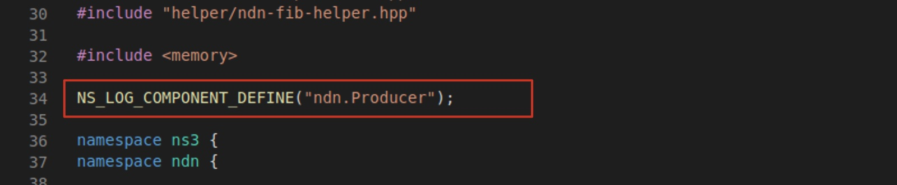

Log 使用筆記
說明
使用 ndnSIM 時會用到的 Log 操作。
終端機使用
使用 Debug 模式編譯，就能在模擬時輸出 Log 到終端機。
- 輸出所有 Log
NS_LOG=* ./waf --run=<scenario name>
指定輸出 Log 的組件
- 例如，只輸出 Producer 和 Consumer 的 Log，並且只能使用完整組件名稱，除了
NS_LOG=*，沒有 * 這種萬用符號可以使用。
NS_LOG=ndn.Producer:ndn.Consumer ./waf --run=<scenario name>
- 可以先定義 Log 輸出規則，以後每次執行
./waf --run時就不用定義規則。
export NS_LOG=ndn.Consumer:ndn.Producer:ndn-cxx.nfd.Forwarder \\ 指定類別
./waf --run=<scenario name> \\ 執行模擬時只要指定 scenario
-
將 Log 輸出到檔案
./waf --run ndn-simple>out.log 2>&1 -
同時輸出 Log 到終端機與檔案
./waf --run=test-simple 2>&1 | tee out.log
指定 Log 輸出級別
NS_LOG可以指定輸出的 Log 層級，例如NS_LOG=ndn.Producer="info"表示輸出Producer組件中層級為INFO的 Log。- 只有指定層級可以不使用
"包裹 info，但對同個組件有多項指定時必須使用"包裹 token。
- 只有指定層級可以不使用
NS_LOG=ndn.Producer="info"與NS_LOG=ndn.Producer="level_info"意義不同。NS_LOG=ndn.Producer="info"：只輸出INFO層級。NS_LOG=ndn.Producer="level_info"：輸出INFO及其上層級。
- Log 層級請參考 ns-3 的 Severity and Level Options。
指定 Log 輸出格式
- 若只有指定層級，最後輸出的 Log 格式會缺少時間、節點等資訊，使用 Prefix 可以手動設定產生這些資訊。
NS_LOG="*=all|prefix_level"就會得到輸出層級和訊息的 Log。- Prefix 選項請參考 ns-3 的 Severity Prefix。
- 結合層級與 Prefix 的範例：
// 只輸出 INFO 層級，並輸出所有 Prefix NS_LOG=ndn.Producer="info|prefix_all":ndn.ConsumerZipfMandelbrot="info|prefix_all"
常用輸出規則設定
- 指定輸出 Log 的組件，輸出所有 Prefix 以取得時間、節點等資訊，只輸出層級為 Info 的 Log。
export NS_LOG=ndn.Producer="info|prefix_all":ndn.ConsumerZipfMandelbrot="info|prefix_all":ndn-cxx.nfd.Forwarder="info|prefix_all":ndn-cxx.nfd.ContentStore="info|prefix_all":ndn-cxx.nfd.ScoringTable="info|prefix_all"
- 只有指定輸出 Log 的組件，因此 DEBUG 層級的資訊都會輸出，Log 量較大。
export NS_LOG=ndn.Producer:ndn.ConsumerZipfMandelbrot:ndn-cxx.nfd.Forwarder:ndn-cxx.nfd.ContentStore:ndn-cxx.nfd.ScoringTable
程式中使用
輸出資訊
- 在程式碼中直接使用
NS_LOG_或NFD_LOG_輸出，在執行模擬器前設定好NS_LOG=輸出層級，就會輸出對應 Log 到終端機。- 例如：
NS_LOG_DEBUG("message")、NFD_LOG_DEBUG("message")。 - 在 ns-3 專案下要使用
NS_LOG_， NFD 專案下要使用NFD_LOG_。 - Log 層級：
NS_LOG_INFO,NS_LOG_DEBUG,NS_LOG_WARN,NS_LOG_ERROR
- 例如：
NS_LOG_UNCOND()、NFD_LOG_UNCOND()不受NS_LOG=設定層級影響，就像使用printf或cout。- 單純輸出 Log，不會寫明從哪個組件產生，不適合用於追蹤。
- 如果有註冊 LogComponent，就應該用
NS_LOG_XXX()或NS_LOG_XXX()。
註冊 LogComponent
NS_LOG= 可以選擇的組件必須在程式碼中註冊過 LogComponent，只需要在 .cpp 放置一行 NS_LOG_COMPONENT_DEFINE("ComponetName") 即可。下圖是 ndn-producer.cpp 中的定義：

如果自訂一個新的 producer 為 ndn.MyProducer，在 ndn-my-producer.cpp 定義組件名稱為 NS_LOG_COMPONENT_DEFINE("ndn.MyProducer")，就能在 NS_LOG= 指定這個組件名稱。